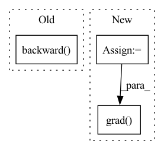

Pattern ID :12447
Before Change
x.requires_grad_()
output = self.prunner.forward(_input)
loss = self.model.criterion(output, _label)
loss.backward()
x.requires_grad = False
return self.get_prunning_plan()
After Change
_input, _label = self.model.get_data(next(self.dataset.loader["train"]))
x = _input.detach()
x.requires_grad_()
output = self.helper.forward(_input)
loss = self.model.criterion(output, _label)
torch.autograd.grad( loss, x) // not using backward() to avoid gradient saving in tensor
x.requires_grad_(False)
prune_num = int(self.prune_ratio * self.filter_num)
In pattern: SUPERPATTERN
Frequency: 3
Non-data size: 3
Instances Fragment ID: 42370976
Project Name: ain-soph/trojanzoo
Commit Name: 2efb7c1e87ec942d11c0b113c9069a40508c97d6
Time: 2020-11-09
Author: ain-soph@live.com
File Name: trojanzoo/defense/backdoor/fine_pruning.py
M Class Name: Fine_Pruning
N Class Name: Fine_Pruning
M Method Name: get_candidates_to_prune(1)
N Method Name: get_candidates_to_prune(1)
M Parent Class: Defense_Backdoor
N Parent Class: Defense_Backdoor
M File Name: trojanzoo/defense/backdoor/fine_pruning.py
N File Name: trojanzoo/defense/backdoor/fine_pruning.py
M Start Line: 129
M End Line: 136
N Start Line: 94
N End Line: 109
Before Change
preds = torch.stack(output_list, dim=1)
loss = criterion(preds, targets)
optimizer.zero_grad()
loss.backward()
optimizer.step()
p_bar.set_description(f"Loss: {loss.item():.4f}")
return torch.squeeze(preds)
After Change
device=targets.device
).build()
feedback_weights = torch.randn_like(layer.forward_weights)
param = layer.forward_weights
optimizer = torch.optim.Adam(layer.parameters(), lr=0.1, maximize=True)
criterion = PVarianceLoss()
preds = None
p_bar = tqdm(range(100))
for i in p_bar:
eligibility_trace = []
output_list, hh_list = [targets[:, 0]], [None]
for t in range(1, targets.shape[1]):
out, hh = unpack_out_hh(layer(output_list[t-1], hh_list[t-1]))
output_list.append(out)
hh_list.append(hh)
instantaneous_eligibility_trace = torch.zeros_like(param)
grad_outputs = torch.eye(out.shape[-1], device=targets.device)
for g_idx in range(grad_outputs.shape[0]):
param.grad.zero_()
instantaneous_eligibility_trace[g_idx] = torch.autograd.grad( out[:, g_idx], param, retain_graph=True) [0][g_idx]
eligibility_trace.append(instantaneous_eligibility_trace)
preds = torch.stack(output_list, dim=1)
mean_error = targets - preds Fragment ID: 42370974
Project Name: neurotorch/neurotorch
Commit Name: 4028f8f7fcb44b43d6235c1d12c734f809b1e629
Time: 2022-11-28
Author: 50332514+JeremieGince@users.noreply.github.com
File Name: src/neurotorch/learning_algorithms/debug_e_prop.py
M Class Name: AnonimousClass
N Class Name: AnonimousClass
M Method Name: dummy_train(1)
N Method Name: dummy_train(1)
M Parent Class:
N Parent Class:
M File Name: src/neurotorch/learning_algorithms/debug_e_prop.py
N File Name: src/neurotorch/learning_algorithms/debug_e_prop.py
M Start Line: 51
M End Line: 64
N Start Line: 45
N End Line: 76
Before Change
for i in range(nsystems):
for ene in pot[i]:
if pot[i][ene].requires_grad:
pot[i][ene].backward(retain_graph=True)
forces[:] = -pos.grad
pos.grad.zero_()
if returnDetails:After Change
forces += ext_force
if not explicit_forces:
enesum = torch.zeros(1, device=pos.device, dtype=pos.dtype)
for i in range(nsystems):
for ene in pot[i]:
if pot[i][ene].requires_grad:
enesum += pot[i][ene]
forces[:] = -torch.autograd.grad( enesum, pos, only_inputs=True) [0]
if returnDetails:
return [{k: v.cpu().item() for k, v in pp.items()} for pp in pot] Fragment ID: 42370971
Project Name: torchmd/torchmd
Commit Name: 66bce98415a99ce90e8bafc123be72b2b3f404c7
Time: 2020-05-28
Author: stefdoerr@gmail.com
File Name: torchmd/forces.py
M Class Name: Forces
N Class Name: Forces
M Method Name: compute(5)
N Method Name: compute(5)
M Parent Class:
N Parent Class:
M File Name: torchmd/forces.py
N File Name: torchmd/forces.py
M Start Line: 84
M End Line: 294
N Start Line: 84
N End Line: 300